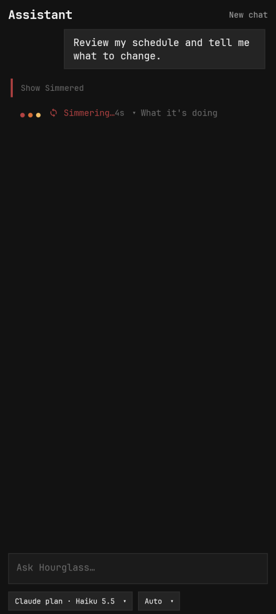
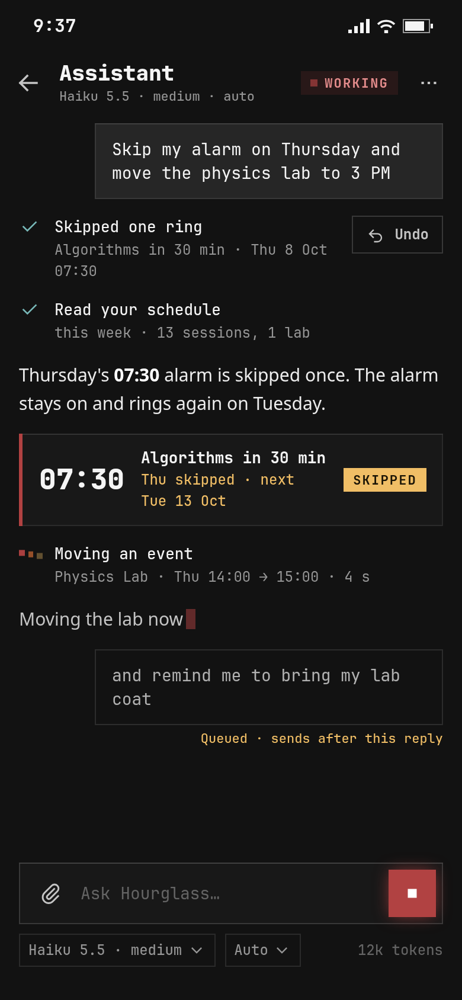

Now · Android 0.3.4 · Paparazzi snapshot

Round 5 · phone · 390 × 844

0.3 spec · PC · Desktop Assistant

What is better
- Each tool step shows what it changed in plain words, with Undo next to the change.
- Result cards: the skipped alarm appears as a real alarm card with its skipped state.
- The step still running has the red/orange/gold dots of the current app, and the reply streams with a red caret.
- A message sent while it works is shown as queued, and the composer turns Send into Stop.
- PC adds Changes in this chat (with Undo), what it can see, and suggestions.